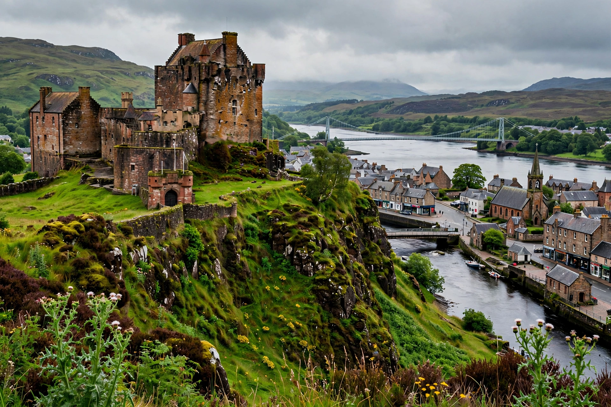

[Image placeholder: Inverness Castle above the River Ness]| Country | Scotland, United Kingdom |
|---|---|
| Population | About 48,000 (city area) |
| Gaelic name | Inbhir Nis — 'mouth of the River Ness' |
| Status | City (granted 2000); 'capital of the Highlands' |
**Inverness** is a city in the Scottish Highlands, at the mouth of the River Ness where it enters the Moray Firth at the northern end of the Great Glen. Market town, port and administrative centre for the Highlands council area, it is popularly styled the 'capital of the Highlands' and is one of Europe's fastest-growing small cities.
Inverness Castle stands on its riverside bluff — the present red-sandstone building (1836) on the site of castles reaching back to the eleventh century, one of which tradition associates with Macbeth. Nearby lie Culloden battlefield (1746), the last battle on British soil, and Loch Ness, source of the monster legend. The Caledonian Canal (1822) links the city southwest through the Great Glen to Fort William.
Pictish king Brude received St Columba here in the sixth century. The medieval burgh suffered in Scotland's wars; Cromwell built a citadel after 1652. After the Jacobite defeat at Culloden, Fort George was built east of the city — still a working garrison and a masterpiece of artillery fortification.
Tourism (including 'Nessie' tourism), public services, the University of the Highlands and Islands, and life-sciences and tech employers drive growth; Inverness Airport links the Highlands to London and Amsterdam hubs.